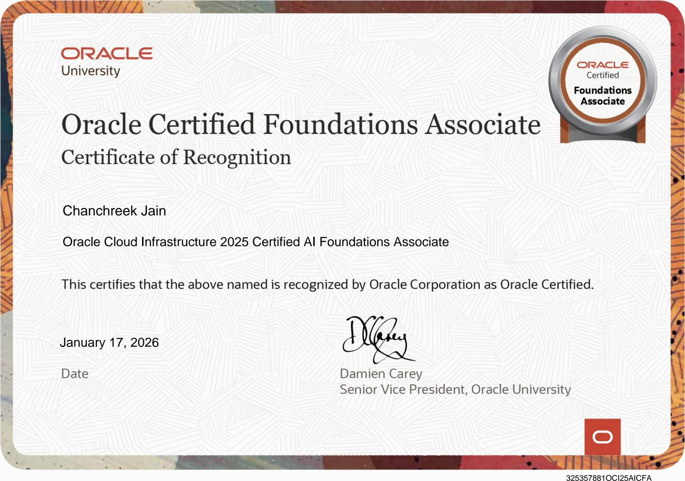

Applied intelligence
LLMs, RAG, prompt engineering, LLM evaluation, hallucination analysis and agent skills. NLP extraction and model orchestration.
AI/ML & Intelligent Automation Engineer
B.Tech CSE (AI/ML) · UPES · CGPA 9.2 / 10
LLMs, RAG, prompt engineering, LLM evaluation, hallucination analysis and agent skills. NLP extraction and model orchestration.
SUMO environments, DQN policies, reward shaping and measurable control decisions across multi-intersection state spaces.
OpenCV, YOLO, edge processing and real-time classification — built to survive constrained compute, not just a benchmark.
JDK 11 → 25 migration, Maven and Jenkins pipelines, Java and Selenium validation suites, and agent workflows with human review at set checkpoints.
Java (JDK 11–25) · Python · C++ · SQL
JDK Migration · Maven · Jenkins · CI/CD · Bitbucket · Git · Selenium · Docker · Kubernetes · Unit Testing
LLMs · RAG · AI Agents · Prompt Engineering · LLM Evaluation · Hallucination Analysis · Agent Skills
Deep Learning · Computer Vision · NLP · Reinforcement Learning · pandas · NumPy · Azure AI · AWS EC2
 Blackhawk Network
Software Engineering Apprentice
Blackhawk Network
Software Engineering Apprentice
B.Tech, Computer Science — specialisation in AI/ML with Honors
AI-102 — Designing and Implementing a Microsoft Azure AI Solution

OCOracle Certified Foundations Associate — Certificate of Recognition
Udemy